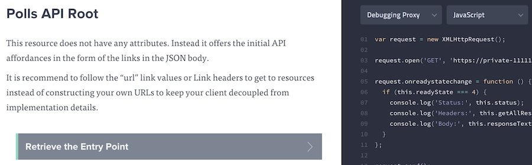
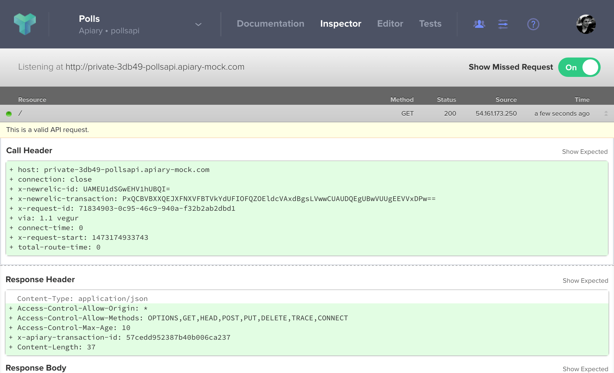

Mock Server
Use Apiary Mock server to quickly preview your API and share it with others.
Overview
In the design phase of an API, it is helpful to experiment with how you feel your API should work and iterate on this process quickly. In the past, this involved writing code as a prototype and setting up a server to run it. This takes time and directly effects the creativity behind the design process.
The Mock Server allows you to try out your API as you design it, giving immediate feedback along the way in how it may be used.
The Mock Server accomplishes this by listening for requests as you’ve defined them in your blueprint. When a request is received to your Mock Server for a URL you’ve defined, the corresponding response for that request will be returned.
Getting Started
The Mock Server is automatically created each time you publish your API Description. This means the only thing you have to do to get started is to write your API Description, include specific requests and responses for your resources, and click publish.
Interacting with the Mock Server
There are several ways in which you may interact with the Mock Server, both using your own tools and environments and using Apiary’s console.
Private URL
When you visit the documentation for an API, you will receive your own private URL for the Mock Server. This is to ensure that other users do not see the traffic you’re sending to the server.
Anyone who has your private URL will have access to your requests.
This URL may be used to interact directly with the server. You can make requests with applications like curl or Paw to that URL and will get responses defined in the API Description.
Code Examples
Apiary provides code examples that you may use to interact with the Mock Server. You can get to these examples by clicking on any action in the documentation.

Here is a link to the “Entry Point” action of the Polls API. There is a drop down that has a list of the available languages for the code examples, where the default is “Raw”.
Using the Console to Send Requests
The console in the documentation is where you can send requests to the Mock Server directly from the documentation (along with the Debugging Proxy and your production server). You can get to this by clicking on an action in the documentation, then clicking “Switch to Console” in the machine column. Here is a direct link to “Vote on a choice” action.
Multiple Responses
API Blueprint allows for specifying multiple responses for a given URL in your API. The Mock Server will respond with the first one unless you use the Prefer HTTP header.
For example, if a resource is defined in an API Description having a 404 response, that response can be requested by adding the header Prefer: status=404 as shown below.
GET /your-resource HTTP/1.1
Host: your-private-mock-domain
Prefer: status=404
API Inspector
Each request and response from the Mock Server is logged in the API Inspector, which can be found by clicking “Inspector” in the Apiary header. There you will see each request received, each response given, and any validation errors that were found.
